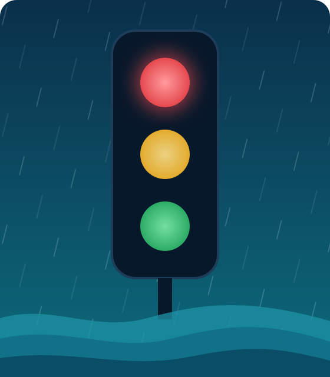

Bienvenido a Río Alerta
¿Subirá el río mañana?
Consulte el semáforo de cada estación del Chocó. Le decimos si en las próximas 24 horas el río estará normal, alto o con riesgo de crecida.
Estaciones
Elija una estación y vea cómo va el río
Toque un punto del mapa o una de las tarjetas. Cada estación mide el nivel de un río.
Cargando las estaciones…

Cómo se lee el semáforo
Tres colores para saber qué esperar
Cada hora comparamos el nivel del río y la lluvia reciente con lo que ha pasado antes en esa misma estación. Con eso calculamos qué tan posible es que el río suba a un nivel de peligro en las próximas 24 horas.
-
Verde · nivel normal
El río sigue dentro de lo habitual.
-
Amarillo · nivel alto
El río está más alto de lo normal. Conviene estar atento a la lluvia.
-
Rojo · peligro de crecida
El río puede llegar a un nivel que casi nunca se supera.
Qué tan confiable es
Una ayuda para anticiparse, no una certeza
Cargando…
- El sistema no acierta siempre: algunas crecidas no alcanza a anticiparlas y a veces avisa de más.
- Funciona mejor en Quibdó, donde hay más datos de años anteriores.
- Si una estación lleva días sin reportar, se muestra como «datos no recientes».
- Este semáforo no reemplaza los avisos oficiales de las autoridades.